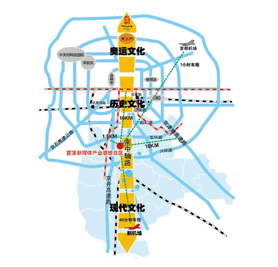

<!DOCTYPE html PUBLIC "-//W3C//DTD XHTML 1.0 Transitional//EN" "http://www.w3.org/TR/xhtml1/DTD/xhtml1-transitional.dtd">
<html xmlns="http://www.w3.org/1999/xhtml">
<head>
<meta http-equiv="Content-Type" content="text/html; charset=utf-8" />
<meta http-equiv="x-ua-compatible" content="ie=7" />
<title>园区概况---中关村国家自主创新示范区国家新媒体产业基地管理委员会</title>
<link rel="stylesheet" type="text/css" href="css/style.css"/>
<script type="text/javascript" src="js/jquery-1.4.2.min.js"></script>
<script type="text/javascript" src="js/myfocus-2.0.4.min.js"></script>
<script type="text/javascript" src="js/jquery.slide.js"></script>
<script type="text/javascript" src="js/loopedslider.min.js"></script>
<script type="text/javascript">
//设置
myFocus.set({
	id:'myFocus',//ID
	pattern:'mF_games_tb'//风格
});

$(function (){
	
	/* 用按钮控制图片左右滚动 */
	$(".hotPic .JQ-slide").Slide({
		effect:"scroolLoop",
		autoPlay:false,
		speed:"normal",
		timer:3000,
		steps:1
	});
	$(".hotPic2 .JQ-slide2").Slide({
		effect:"scroolLoop",
		autoPlay:false,
		speed:"normal",
		timer:3000,
		steps:1
	});
	
	
	
});
</script>
</head>

<body>
<div class="language"> <a href="#"></a> <a href="#"></a> <a href="#"></a> </div>
<div class="head"></div>
<div class="menu">
  <ul>
    <li><a href="index.html">网站首页</a></li>
    <li><a href="newscenter.html">新闻中心</a></li>
    <li class="current"><a href="overview.html">园区概况</a></li>
    <li><a href="public.html">政务公开</a></li>
    <li><a href="server.html">企业服务</a></li>
    <li><a href="copyright.html">版权交易</a></li>
  </ul>
</div>
<div class="clear"></div>
<div class="content">
 <div class="container">
   <div class="position">
     <div class="fl">当前位置：<a href="index.html">首页</a>＞<a href="newscenter.html">园区概况</a> > 区位优势</div>
     <div class="second-search">
       <input name="" type="text" class="input" />
       <input name="" type="button" class="second-search-btn" />
     </div>
   </div>
   <div class="leftside">
     <div class="leftT">园区概况</div>
     <ul>
       <li class="listnow"><a href="newscenter.html">基地概况</a></li>
       <li><a href="#">区位优势</a></li>
       <li><a href="#">产业基础</a></li>
       <li><a href="#">产业定位</a></li>
       <li><a href="#">空间布局</a></li>
       <li><a href="#">远景规划</a></li>
       <li><a href="#">基地荣誉</a></li>
       <li><a href="#">领导关怀</a></li>
       <li><a href="#">园区纪事</a></li>
     </ul>
   </div>
   <div class="rightside">
     <div class="right-title">最新动态</div>
     <div class="overview">
       <h2>区位优势</h2>
       <div class="text-come">
         来源：&nbsp;&nbsp;&nbsp;&nbsp;
         日期：2015-11-22
       </div>
       <div class="overview-text">
          <p>国家新媒体产业基地紧邻京开高速公路和南五环路，北距天安门16公里，东距京津塘高速公路16公里，距首都国际机场、CBD、中关村科技园区等北京核心区域均在1小时车程之内，距地铁大兴线高米店南站仅1公里。基地核心区位于首都南中轴延长线文化创意产业带上，距离北京新机场10公里，中轴路将成为连接北部的奥林匹克森林公园、新媒体产业基地与新机场的重要通道。便捷、高效、多选择和现代化的交通手段使大兴新区成为不可多得的交通要地。 
          </p>
          <p>●  公路：京开高速公路、京津塘高速公路、104国道纵贯南北，五环路、六环路横跨东西，能够享受高标准公路网络。
          </p>
          <p>●  铁路：京津、京沪、京九等多条铁路动脉交汇，多处火车站为物流运输提供了便利。地铁大兴线、亦庄轻轨开通使用，实现与城区的"无缝连接"，为区域经济快速发展提供支持。
          </p>
          <p>●  航空：新机场定位是大型国际枢纽机场，机场规划选址核心区距离天安门的直线距离大约46公里，机场将于2015年完成拆迁，并进入全面开工建设阶段，2017年基本建成，2018年实现首航，预计2025年旅客吞吐量达到7200万人次，年货运吞吐量达200万吨。</p>
          <p> ●  海运：距中国北方最大国际贸易港天津新港150公里，该港口与全球170多个国家和地区的300多个港口通航，集装箱码头年吞吐能力达100万个标准箱。 </p>
          
       </div>
     </div>
     
   </div>
   
  
  
 
  <!--友情链接-->
  <div class="weblink">
    <div class="weblink-title">部分网站</div>
    <p>                                                       
      
      <a href="#">党政办</a>
      <a href="#">纪检监察科</a>
      <a href="#">组宣科</a>
      <a href="#">内审科</a>
      <a href="#">土地规划科</a>
      <a href="#">综治办</a>
      <a href="#">安监科</a>
      <a href="#">人力资源部</a>
      <a href="#">企业服务部</a>
      <a href="#">项目科</a>
      <a href="#">招商部</a>
      <a href="#">开发部</a>
      <a href="#">工程部</a>
      <a href="#">预算部</a>
      <a href="#">经营管理部</a><a href="#">财务部</a>
      <a href="#">工会</a>
      <a href="#">团委</a>
      <a href="#">财政所</a>
      <a href="#">城管分队</a>
      <a href="#">统计所</a>
    </p>
    
    <div class="weblink-title">相关网站</div>
    <p>                                                       
     <a href="#">区政府办公室  </a> 
     <a href="#">发改委   </a> 
     <a href="#">教委科委   </a> 
     <a href="#">经信委   </a> 
     <a href="#">金融办   </a> 
    <a href="#"> 民委   </a> 
    <a href="#"> 监察局   </a> 
     <a href="#">民政局   </a> 
     <a href="#">司法局   </a> 
     <a href="#">财政局   </a> 
     <a href="#">人力社保局   </a> 
    <a href="#"> 环保局   </a> 
    <a href="#"> 住建委   </a> 
    <a href="#"> 市政市容委   </a> 
    <a href="#"> 交通局   </a> 
    <a href="#" > 农委   </a> 
    <a href="#" > 水务局   </a> 
    <a href="#" > 商务委   </a> 
    <a href="#" > 旅游委  </a> 
    <a href="#" > 文委   </a> 
    <a href="#" > 卫生局   </a> 
    <a href="#" > 人口计生委 </a> 
    <a href="#" > 审计局   </a> 
    <a href="#" > 外事办  </a> 
     <a href="#" > 国资委  </a> 
     <a href="#" > 安监局  </a> 
     <a href="#" > 体育局 </a> 
     <a href="#" > 统计局 </a> 
    <a href="#" >园林绿化局</a>   <a href="#" >民防局</a>   <a href="#" >法制办</a>  <a href="#" > 信访办</a>   <a href="#" >老龄委</a>   <a href="#" >城管局</a>   <a href="#" >行政服务中心</a>   <a href="#" >动物卫生监管局</a>   <a href="#" >社会办</a>  <a href="#" >北京电子商务中心区</a>   <a href="#" >新区就业直通车网站</a>   <a href="#" >中国西瓜交易网</a>   <a href="#" >大兴区工业产品供求信息共享平台</a>   <a href="#" >瀛海精神家园网站</a>   <a href="#" >大兴区供暖管理中心</a>   <a href="#" >北京大兴西瓜节官方网站</a>
<a href="#" >大兴区职工服务中心</a>   <a href="#" >南海子公园</a>   <a href="#" >大兴区学雷锋志愿者服务队</a>   <a href="#" >北京京南物流基地</a>   <a href="#" >大兴区节水型社会建设网 </a>  <a href="#" >大兴区妇女儿童活动中心</a>   <a href="#" >大兴区防火安全委员会</a>   <a href="#" >大兴社区卫生大兴区献血网</a>   <a href="#" >大兴区交通安全信息网</a>   <a href="#" >礼贤民族敬老院</a> 
      
    </p>
  </div>
 </div> 
</div>
<div class="footlink"> 
  <a href="#">设为首页</a>|
  <a href="#">加入收藏</a>|
  <a href="#">意见反馈</a>|
  <a href="#">网站地图</a>|
  <a href="#">网站数据统计</a>
</div>
<div class="footer">
  大兴新媒体产业园区管理委员会  版权所有 - 京ICP备00005555号<br />
大兴新媒体产业园区计算机信息中心  管理维护  webmaster@dxmedia.gov.cn<br />
推荐使用1600*900分辨率，并使用IE6.0或以上版本浏览器
</div>


</body>
</html>
